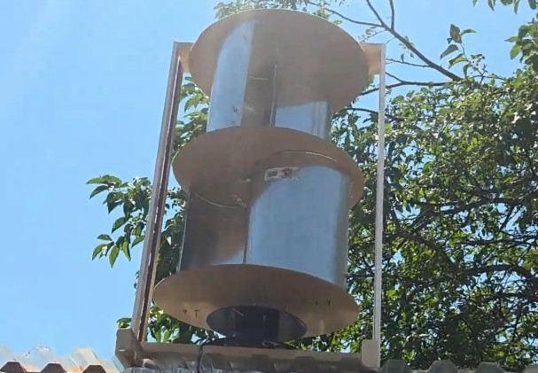
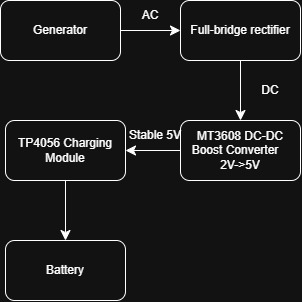
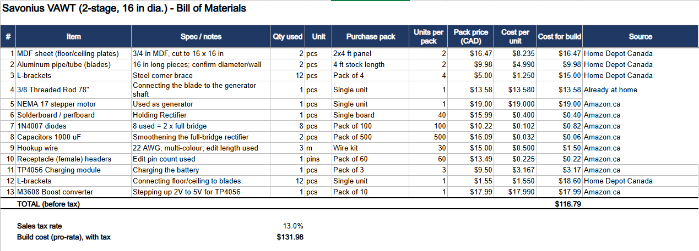
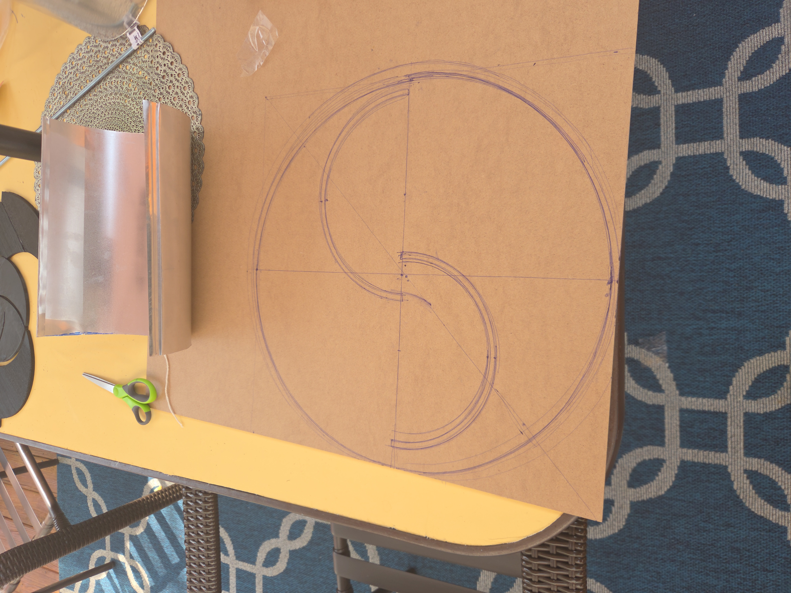
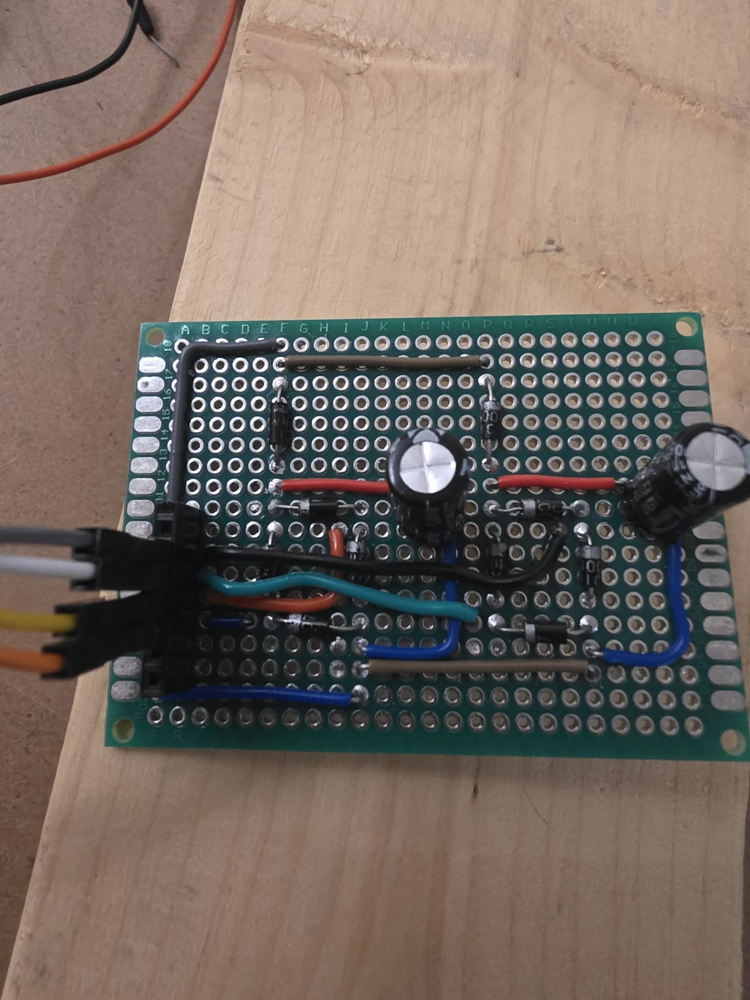
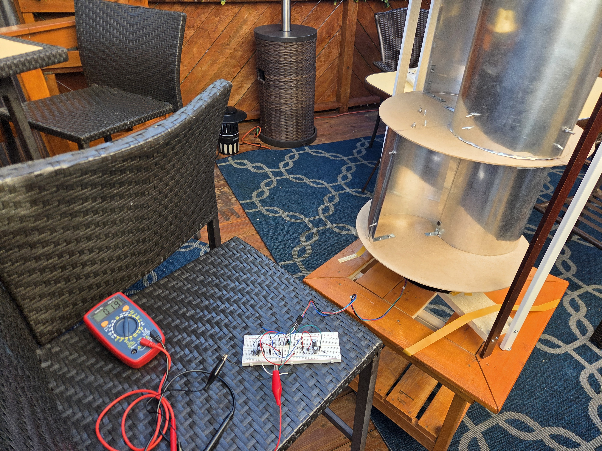
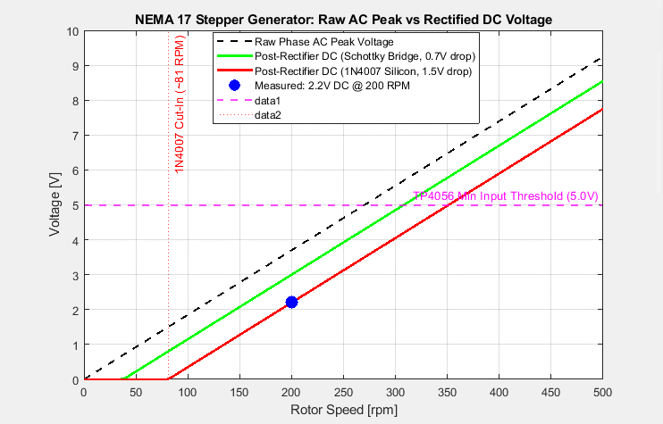
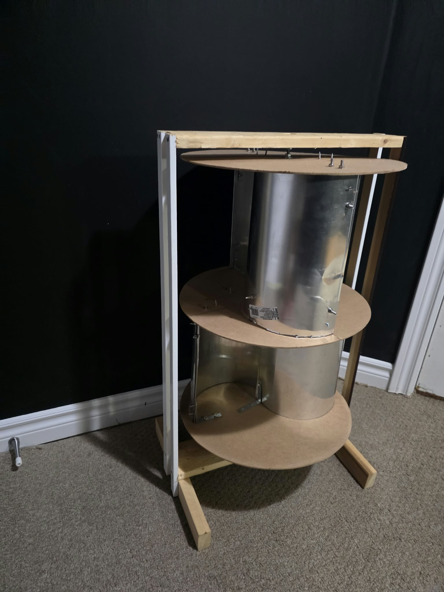

Aug 2026

This project was made with the goal of creating a small-scale wind turbine that could be used to generate electricity in a residential setting. Ocassionally, my neighborhood would experience power outages due to storms, and I wanted to create a wind turbine that could charge a battery that my family back at home could charge their devices during these outages. The design is based on the Savonius vertical-axis wind turbine, which is known for its simplicity and ability to capture wind from any direction. The turbine consists of four total vertical blades that rotate around a central axis, driving a generator to produce electricity.
I needed to create the most efficient wind turbine possible, while also keeping the design simple enough to be built
with the current tools, materials, and time available (I had about 2 weeks before I had to move back to Ottawa for the
start of my second year). Thus I had to make a few design choices that dictate the final wind turbine
design. I decided to use a Savonius vertical-axis wind turbine design because of its mechanical simplicity, reliability, and
ability to capture wind from any direction.
Although HAWTs (horizontal-axis wind turbines, the most common type people typically think of) are more efficient (45-55% compared to VAWTs 15-42%), they require a more
complex design and are more difficult to build. VAWT designs are also more suitable for small-scale, residential environments and
only require slower wind speeds to start.


Since this design had two stages, I began with the bottom stage and mounted the aluminum pipe as the blades perpendicular to the MDF floor and ceiling. Then the second stage was mounted on top with a 90-degree offset to the bottom stage. This offset was important as it smoothed out torque and allowed consistent rotation no matter the wind direction. The NEMA 17 stepper motor was mounted at the center of the bottom stage and connected to the blades with a simple shaft and flexible coupler. Then, finally I added a wooden frame to support the turbine and keep it upright.


Tests were done with a fan to simulate wind, and RPM calculated manually from calculating the number of seconds it took for each full rotation in a minute. At around 200RPM, the NEMA 17 stepper motor paired with dual 1N4007 full-bridge rectifiers produced an output of 2.2V DC. While the mechanical turbine spin smoothly and captured the wind well, 2.2V is not sufficient to activate the TP4056 charging module, which requires a minumum of 5V input.


It was hard to set the wind turbine at specific RPMs since the fan only had 4 settings, so there were only 4 sample points which a linear regression was used. At the lower speeds, the voltage was so low it was basically 0.
The standard 1N4007 silicon diodes introduced a fixed voltage drop of ~1.5V across the bridge circuit.
Although manual screen-tapping for RPM measurement is a good baseline, an automatic optical or magnetic tachometer
would yield cleaner data. For the next steps, switching to diodes with lower forward voltage drops like a
Schottky 1N5817 could cut bridge losses and recover up to 0.8V. Squeezing out more voltage from the generator
is going to be a challenge, but I could also consider utilizing ultra-low-voltage start boost converters that are
capable of initiating boost conversion from input voltages as low as 0.4V.
Overall, this project was a great learning experience in mechanical design, electrical engineering, and problem-solving.
I learned a lot about the challenges of small-scale wind energy generation and the importance of optimizing every component in the system.
